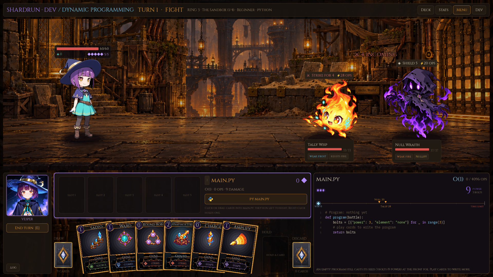
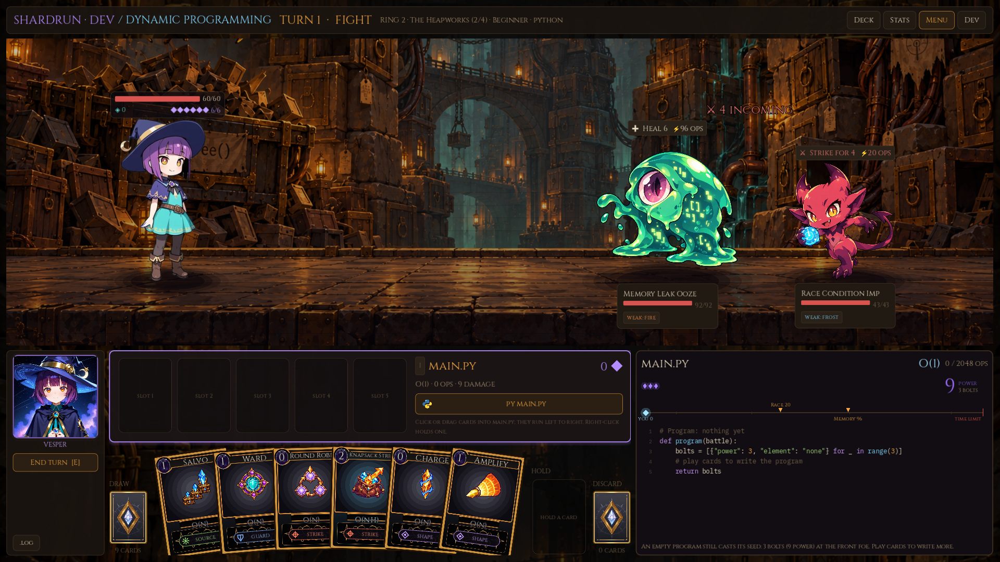
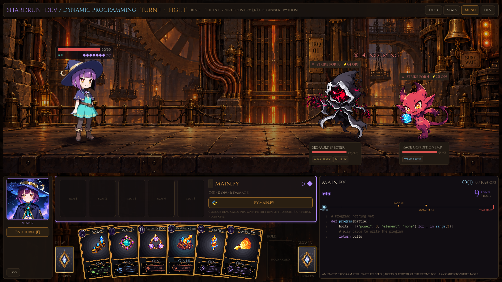
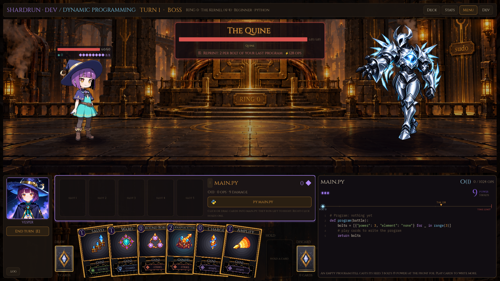

ROOTWARD / IMPLEMENTED ENVIRONMENTS
Dive to the Kernel
The battle rooms now use the four approved paintings, with local ambient animation. The main Shardrun map keeps its full route through every ring and descends through one continuous Machine shaft.
Motion runs in the game: lantern flicker, dust and steam, coolant drips, interrupt lamps, and a slow kernel glow. Reduced motion returns the backgrounds to a still state. These screenshots capture a single frame.
Battle arenas

RING 3
The Sandbox
Dust, lanterns and abandoned test chambers.

RING 2
The Heapworks
Memory vaults, coolant leaks and a garbage collector’s leftovers.

RING 1
The Interrupt Foundry
Copper buses, timing machinery and sequenced interrupt lights.

RING 0
The Kernel / Root Sanctum
Ordered brass traces, permission gates and the processor shrine.
A long route through each ring
Eight rows in the Sandbox; nine in each deeper ring. These captures show different viewports of the scrolling maps. Background patina, wall fittings and occasional maintenance signs vary by ring.